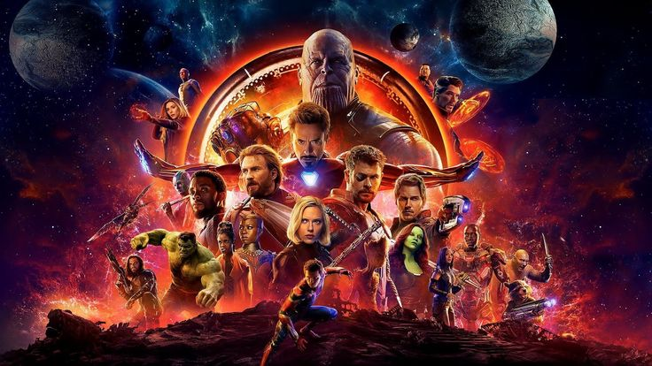

.jpg)
John Wick (2014) is an American neo-noir action thriller directed by Chad Stahelski and starring
Keanu Reeves as the titular character.
Main tagline / slogan:
"Don’t set him off."
Other promotional slogans for the first film included:
"Revenge is all he has left."
"They stole his car. They killed his dog. Now he’s coming for them."
"Everything’s got a price."
Quick plot:
John Wick, a retired hitman, comes out of retirement to hunt down the men who killed his puppy—a final gift
from his late wife—and stole his car. His legendary reputation in the criminal underworld makes him an
unstoppable force of vengeance.
READ FULL MOVIE

Avengers: Infinity War (2018) is the third Avengers film in the Marvel Cinematic Universe,
directed by Anthony and Joe Russo.
Tagline / Slogan:
The main marketing slogan was:
“An entire universe. Once and for all.”
Other promotional lines included:
“Destiny arrives.”
“Where will you be when it all ends?”
“The end is near.”
These taglines reflected the film’s massive scope, bringing together heroes from across the MCU to face
Thanos, who seeks the six Infinity Stones to wipe out half of all life in the universe.
.
READ FULL MOVIE

Peaky Blinders is a British crime drama TV series (2013–2022) created by Steven Knight.
Main tagline / slogan:
"Business is business."
Other promotional lines used across seasons included:
"By order of the Peaky Blinders."
"Lies travel faster than the truth."
"Fearless to the last."
"You can’t beat the Peaky Blinders."
Quick premise:
Set in post–World War I Birmingham,Main tagline / slogan:Business is busines,sEngland, it follows the Shelby
family—particularly Thomas "Tommy" Shelby
(Cillian Murphy)—as they rise from street gang leaders to powerful crime bosses, navigating politics,peacky
betrayal, and violence.
READ FULL MOVIE
.jpg)
Spider-Man: No Way Home (2021) is the third film in Tom Holland’s Spider-Man series in the MCU,
directed by Jon Watts.
Main tagline / slogan:
"The Multiverse unleashed."
Other promotional lines included:
"The Multiverse is real."
"The Multiverse awaits."
"Be careful what you wish for."
Plot in short:
After Peter Parker’s identity is revealed to the world, he asks Doctor Strange to cast a spell to make
people forget. The spell goes wrong, tearing open the multiverse and bringing villains—and other
Spider-Men—from previous Spider-Man universes into his world.
.
READ FULL MOVIE

In Thalapathi (1991), Rajinikanth plays Surya, a righteous but hot-headed man raised in poverty,
who becomes the right-hand man of a local don (played by Mammootty).
Director: Mani Ratnam
Music: Ilaiyaraaja
Genre: Action drama with themes of friendship, loyalty, and moral conflict.
Notable: The film is loosely inspired by the friendship between Karna and Duryodhana from the Mahabharata.
Rajini’s character highlights:
Surya is fierce in his sense of justice, even outside the law.
His loyalty to Devaraj (Mammootty) drives most of the story.
The performance was praised for blending Rajinikanth’s charisma with emotional depth.
If you want, I can also give you five iconic dialogues of Rajinikanth from Thalapathi. Would you like that?
.
READ FULL MOVIE

The official slogan (tagline) of Mankatha (2011), as featured in its marketing materials and
opening credits, is:
“Strictly No Rules”
IMDb lists this as one of the movie's taglines
IMDb
.
Reviews and retrospectives also highlight how the film opens with this line—“Mankatha – Strictly No
Rules”—setting the tone for a story driven by audacious characters and moral anarchy
MADRAS INK.
Film Companion
.
READ FULL MOVIE